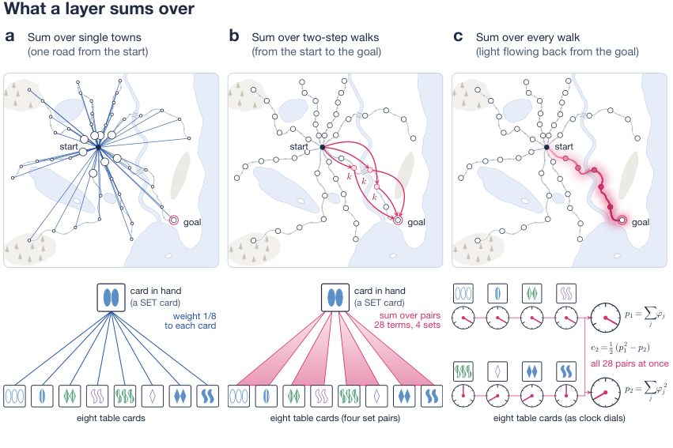
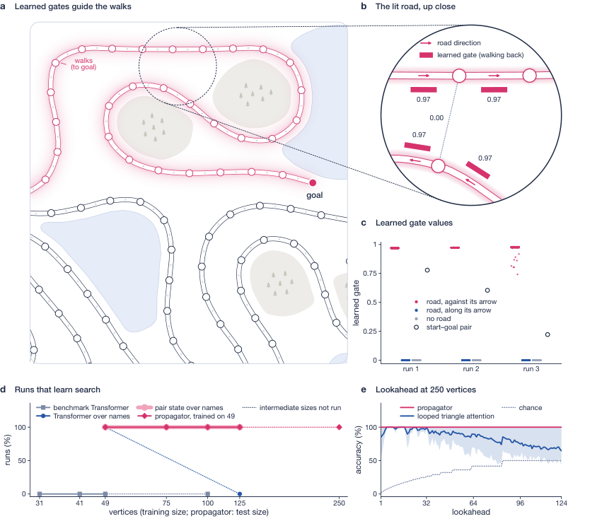
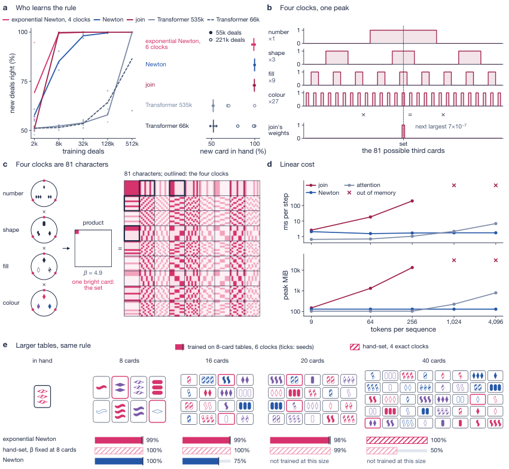

Key theorems (size law, depth-law construction for pair layers, Newton-identity set counting) are machine-checked in Lean 4 with Mathlib, no sorry, files released.
Abstract
Attention scores candidate supports of an answer, which we call witnesses, and reads the scores at a temperature. We build a higher-order attention layer whose state lives on pairs of items: for a pair (a, b), each third item k is a witness judged through its legs (a, k) and (k, b). It reads witnesses at zero temperature, keeping the best and the number tied with it, passes on only bits comparing such counts, rebuilds its pair state from the input and these bits at every loop, and is trained from answers alone. Each choice removes one way soft attention fails at size: dispersed weight, unresolved gaps between learned scores, and a drifting soft state. In maximum retrieval it is right on at least 99.95% of sets 1,000 times larger than in training, on all ten seeds; trained with a soft count, the same network falls to 42% at 4,096 items. On CLRS-30 without hints, a general form of the layer (half its channels read at zero temperature, numbers embedded, state carried) beats the best published model, which uses hints on some tasks; the full cold layer is exact on every test input of 9 of the 12 tasks whose answers depend on numbers only through comparisons. From yes-or-no answers it decides 2-SAT and two-colouring exactly at 500 variables and, as our theory predicts, not parity equations. Beside a frozen 7B language model it chains family relations exactly at 1,000 statements after training on 16, where the model alone falls to 44%; finite checks on the weights prove every block that learned correct at every size, on acyclic contexts and given what the model reads. On CLUTRR it is right on every story of five to ten relations given the graphs, learning the 62 rules exactly; from text, with the model frozen, no hand-written rule and only a small read-in trained, it lifts an open 7B model from 33% to 65%, above every system we found without hand-written rules except frontier reasoning models.
Problem
Higher-order attention layers succeed on some tasks and fail on others, and no theory predicts which. The paper seeks principles that explain when attention-like layers learn and generalise to larger inputs.
Approach
Each layer is cast as computing a partition function over a family of witnesses (tokens, pairs, walks, subsets), read through a link at a temperature. The paper proposes matching the family to the task, using closed forms (matrix inverse, Newton identities, determinants), and reading at low temperature with a margin growing like the log of the family size. It introduces new layers (propagator, Newton attention, exponential Newton). It proves a size law, a depth law for pair layers, and a set-counting proposition, and checks these in Lean 4 with Mathlib using only standard axioms.

Fig. 1 | What a layer sums over. Hand-set layers, nothing trained, on one 49-vertex search question (top; towns are vertices, roads directed edges) and one eight-card SET deal (bottom). a , A lookup sums over single witnesses: the start weighs every town by its own score (circle area, softmax weight: 0.100 for each of the eight children, 0.005 for every other town), and the card in hand weighs eac
Results
A propagator trained on graphs up to 49 vertices searches graphs five times larger. Newton attention learns SET at linear cost. A small looped pair layer matches or beats FloydNet without hints on 9 of 12 CLRS-30 tasks. Measured critical margins match the predicted logarithmic law within about 0.3 nats in most cases.

Fig. 2 | One trained propagator layer searches graphs five times larger than any in training. a , Part of a 250-vertex test question (lookahead 31), lit by the walks to the goal of a propagator trained on graphs of up to 49 vertices. b , The circled spot: each road’s learned gate for walking back (bars), and one between towns with no road. c , Every learned gate of the working channel in three tra

Fig. 3 | SET: who learns the rule, how the join decides, why exponential gates hold as tables grow. a , Accuracy on new deals against training deals (mean of three seeds; exponential Newton with four clocks); right, accuracy with a card in hand never held, after 55,296 deals with 27 cards in hand (filled; six clocks) and 221,184 (open; Transformers). b , One trained join: each attribute’s clock ov